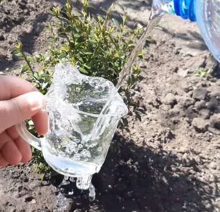
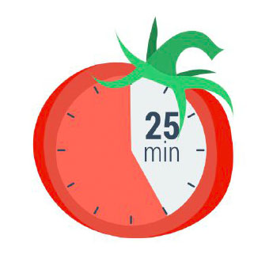
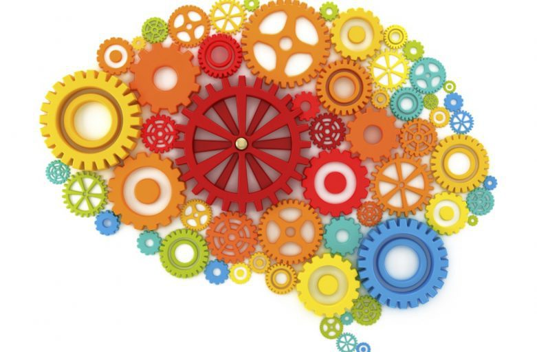
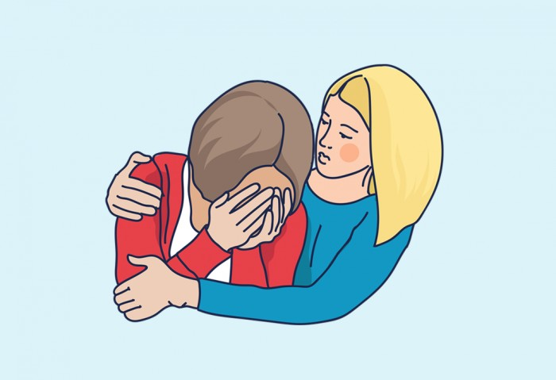

ПРАВИЛО №1:
СОБЛЮДЕНИЕ ПИТЬЕВОГО РЕЖИМА:
Сколько необходимо потреблять води за сутки?
- За сутки необходимо потреблять 1,5 - 2,5 л. в сутки.
Как правильно потреблять воду в течении дня?
- По 2-3 глотка, каждые 10 мин.
К чему может привести недостаток воды в организме?
- К литальному исходу
Прогноз соблюдения питьевого режима в разных социальных образованиях
| Соц. образование | К-во людей | Обьем воды |
| Ваша семья | 4 | 4.5 |
| Жители вашего дома | 800 | 1890 |
| Жители вашего города | 3179008 | 7239459 |
| Жители Украины | 42153000 | 95543202 |
| Все люди земли | 770000000 | 17432332959 |
ПРАВИЛО №2:
Расчет каллорий
Как расчитать сколько коллорий необходимо потреблять?
- Формула либо калькулятор
Важно ли подсчитовать потребляемые каллории?
- Конечно, слишком низкое или большое потребление калорий, плохо сказывается на Вашем здоровье!
| Участник | Рекомендуемая норма | Потребляемое количество | Разница | Рекомендации | ||
| Я | 1866 | 1880 | 14 | Меньше есть | ||
| Мама | 1525,8 | 1200 | -325,8 | Больше есть | ||
| Папа | 1821 | 1900 | 121 | Меньше есть |
| Участники семьи | Рост | Идеальный вес | Существующий вес | Разница |
| Я | 170 | 60 | 55 | -5 |
| мама | 176 | 65.9 | 60 | -5.9 |
| папа | 180 | 100 | 66 | 34 |
| Участники семьи | пол | вес | рост | возраст | КФА | Норма калорий |
| мама | женский | 68 | 176 | 43 | 1.375 | 2175.5 |
| папа | мужской | 85 | 170 | 44 | 1.55 | 2483.875 |
| я | мужской | 79 | 170 | 13 | 1.2 | 1820 |
ПРАВИЛО №3:
СОБЛЮДЕНИЕ ЗДОРОВОГО ОБРАЗА ЖИЗНИ:
Зачем необходимо делать зарядку?
- Для того что бы не чувствовать усталости на протижении дня.
К каким последствиям может привести отсуцтвие физических упражнений?
- К ухудшению фигуры и работы суставов.
Как смотивировать себя делать зарядку?
- Вариантов много, но нужно ЗАХОТЕТЬ!
Утреняя зарядка
ПРАВИЛО №4:
ЗДОРОВЫЙ СОН:
1. Здоровый сон
Специалисты организации Nemours, которая занимается здоровьем детей, считают, что подростки должны спать около девяти часов в сутки.  Тинейджеры редко столько лежат в кровати.
Тинейджеры редко столько лежат в кровати.
Как сон влияет на подростковое здоровье?
- Помогает подростку полноценно расти и рзвиватся;
- Напрямую влияет на внимательность и успехи в школе;
- Помогает добиваться успехов в школе
- Нарушение сна приводят к многочисленным сложностям со здоровьем: лишний вес и проблемы с сердцем, нарушения иммунитета и эмоциональные проблемы.
У подростков збиваются биологические часы
В подростковом возрасте режим сна заметно отличается от детского или взрослого. В этот период "сбрасывается" циркадный ритм (или биологические часы), из-за чего тинейджеры засыпают и просыпаются позже. Считаетс, что это связано с ммелатонином - гормоном, который регулирует наши биологические часы. У подростков он вырабатывается позже, чем у маленьких детей или взрослых, что приводит к тому, что ребёнок не хочет спать по вечерам.
Мешают стресс и гаджеты
Мешают стресс и гаджеты Есть и ещё одна причина нарушения сна — стресс. В подростковом возрасте у ребёнка больше обязанностей: ЕГЭ, репетиторы, грядущее поступление, половое созревание. Мозг постоянно возбуждён. Также достаточно распространённая причина нарушения сна-привычка ложиться спать с телефоном или планшетом. Большое количество информации не даёт мозгу успокоиться, поэтому подростку тяжело заснуть. К слову, такой же эффект вызывают поздние раунды в Fortnite или « Доту».
Как помочь подростку высыпаться?
Вот советы, которые помогают выровнять режим сна:
- Ложиться спать и просьыпаться в одно и то же время, даже в выходные;
- Больше физической активности, но, главное, не перед сном (нужно около трёх часов, чтобы организм успокоился)%; Пить меньше кофе, чая и энергетиков; Перестать пользоваться электроникой хотя бы за час до сна;
- Зажигать в комнате подростка ночник и проветривать по вечерам.
Последствия недосыпа Если подростки не получают положенных 9-10 часов сна каждую ночь, они могут столкнуться со многими неприятными последствиями, такими как:
- Депрессия. Согласно исследованиям, молодые люди, которые ложатся позже, более склонны к развитию депрессии и мыслям о самоубийстве.
- В мозгу, похоже, существует связь между сном и депрессией.
- Плохие оценки.
- У подростков, которые не высыпаются, обычно появляются проблемы с памятью и школьной успеваемостью.
- Поведение.
- От нехватки сна может снижаться внимание, как результат- гиперактивность и новые скандалы.
- Дорожно-транспортные происшествия.
- У сонного подростка, как правило, замедленная реакция, позтому он рискует стать участником ДТП.
Сколько нужно спасть людям в разном возрасте
- Новорожденные (до 3 месяцев)- 12-15 часов
- Дети (4-11 месяцев)- 11-15 часов
- Дети (от 1года до 2 лет)- 11-14 часов
- Дошкольники(3 - 5 лет)- 10-13 часов
- Школьники(от 6 до 13 лет)- 9-11 часов
- Подростки(14-17 лет)- 8-10 часов
- Взрослые (18-64 года)- 7-9 часов
- Пожилые люди старше 65 лет - 7-8 часов
| Член семьи | Возраст | Ложится спасть | Встает | Всего спит | Должен спать | Вывод |
| я | 13 лет | 23 часа | 9 часов | 10 часов | 9-11 часов | - |
| Мама | 45 лет | 1.30 | 10 | 7.30 часов | 7-9 часов | - |
| Папа | 55 лет | 23 часа | 5.15 часов | 6 часов | 7 - 9 часов | Раньше ложится |
| Сестра | 12 лет | 23 часа | 9 часов | 10 часов | 9-11 часов | - |
Этический вывод:
- Каждый человек должен нести индивыдуальную ответственость перед семьей и обществом за свое здоровье, путем соблюдения здорового образа жизни, в том числе и режима сна
- Проживая в сообществе других людей, каждый из нас обязан заботиться о здоровье ближних и стараться поддерживать других в соблюдении режима.
- При наличии в семье людей с различными хронотипами мы должны уважать их возможности и потребности, и если человек лег спать - необходимо поддерживать все условия, необхоимые для его полноценного сна: тишину, тепло, темноту вокруг.
ПРАВИЛО №4:
ХРОНОТИП
Что такое хронотип?
Хронотип - это характер организации суточных (циркадных) биоритмов человека.
Хронотип отражает суточную динамику
функциональной активности различных органов
и систем организма (время пробуждения и
засыпания, работоспособность, 24-часовой ритм  артериального давления, легочной вентиляции,
секреции гормонов и др.).
артериального давления, легочной вентиляции,
секреции гормонов и др.).
В зависимости от преимущественной активности человека в то или иное время суток выделяют 3 хронотипа:
- «жаворонки» - утренний тип;
- «голуби» - дневной тип;
- «совы» - вечерний тип.
| Параметр | "Жаворонок" | "Сова" |
| Время пробуждения | 4.00-6.00 | 8.00 - 10.00 |
| Время засыпания | 20.00 - 22.00 | 24.00 - 2.00 |
| Пик активности | 8.00 - 10.00 | После 16.00 |
| Доминирующее полушарие головного мозга | Левое | Правое |
| Творческая активность воображение | Ментше | Больше |
| Характер мышления | Абстрактно - логическое, аналитическое. | Конкретно-предметное, холичтическое. |
Протестуй себе!
Трудно ли вам вставать рано утром?
Если у вас есть возможность выбора, в какое время вы бы ложились спать?
Ч Какой завтрак вы предпочитаете в течение первого часа после пробуждения?
Если вспомнить ваши последние размолвки на работе и дома, когда они преимущественно происходили?
От чего легче отказаться:
Как точно вы рассчитываете время в течение 1 минуты?
Как легко вы можете изменить привычки, связанные с едой, во время отпуска?
Если рано утром предстоят важные дела, насколько раньше вы ложитесь спать?
Если вы ложитесь спать в 23.00, то какова степень вашей усталости?
Какова степень вашей зависимости от будильника, если утром вы должны встать в определенное время?
Как вы деятельны в первые полчаса после утреннего вставания?
Вы решили заниматься физкультурой .Ваш друг предложил заниматься дважды в неделю, по 1 часу утром, между 7 и 8 часами утра. Будет ли это благоприятным временем для вас?
. Вам предстоит какая-либо работа или отъезд ночью, между 4 и 6 часами. На следующий день у вас нет никаких обязанностей .Какую из следующих возможностей вы выберете?
Иногда говорят “утренний человек ” и “вечерний человек”. К какому типу вы себя относите ?
У вас возникло решение серьезно заниматься закаливанием организма. Друг предложил делать это дважды в неделю, по 1 часу , между 22 и 23 часами вечера. Как вас устраивает это время?
Жаворонок 0-20,
Голубь 21-29,
Сова 30 - выше
ПРАВИЛО №5:
РЕЖИМ ТРУДА И ОТДЫХА
Метод <<ПОМИДОРА>>
Всего 5 простых шагов
1. Определите ичетко сформулируйте задачу. Очень важно понимать, что и зачем вы собираетесь делать следующие 25 минут.
2.Заведите таймер на 25 минут. Почему 25? Согласно исследованиям психологов, человек может сосредоточиться на чем-то максимум 30 минут. 25 минут это один «помидор». Один помидор беспрерывной работы.
3. Приступайте к работе, пока не зазвонит таймер. Дать себе слово, не отвлекаться от задачи все 25 минут. Ни на звонки, ни на сообщения или письма, ни на коллегу. Только работа над поставленной задачей.
4. Сделайте перерыв на 5 минут. Можно ответить на пропущенные звонки и письма.
5. После 4 пюмидоров сделайте большой перерыв.
ПРАВИЛО №6:
Эффективное планирование:
Важность планирования:
Понимать, за какое время реально достичь определенной цели.
Планировать время на случай непредвиденных обстоятельств.
Избегать брать на себя такое количество дел, которые вы не сможете выполнить.
Упорно работать над своими личными и карьерными целями.
Иметь достаточно времени на семью, друзей, саморазвитие и хобби.
Убеждаться, что у вас есть достаточно времени для выполнения самых важных задач.
Достигать баланса в жизни.
Определите доступное время
Наверняка у вас есть дела, которые вы делаете каждый день и тратите на них определенное количество времени. Есть соблазн включить и его, но будьте реалистами — вам нужно планировать свободное время. Заранее решите, сколько свободного времени потратите на работу, сколько на саморазвитие, а сколько на здоровье, семью и развлечения.
Распланируйте основные действия
Какие действия вам обязательно нужно совершить для того, чтобы гарантированно сделать свою работу хорошо? Исходите именно из этого, не делайте ее плохо, не забирайте это время.
Определите дела с высоким приоритетом
Именно эти дела должны быть на первом месте для вас, что совсем не обязательно означает делать их в первую очередь (для них может быть определенное время, не зависящее от вас). Это значит выделить время для тщательной подготовки.
Мой список дел
ДобавитьПРАВИЛО №7:
АКТИВАЦИЯ МОЗГА:
На развитие чего направлена пальчиковая гимнастика?
- На развитие: речи, внимания, памяти, мелкой моторики, воображения.
В каком возрасте начинать занятия?
- Это тот случай, когда можно сказать, что чем раньше, тем лучше. Но если вы не успели начать рано, то начинайте прямо сейчас!
Насколько полезны занятия пальчиковой гимнастикой?
- Маленький ребенок познает мир с помощью игры. Чем разнообразнее игры, тем интереснее малышу.
Видео пальцевой гимнастики

ПРАВИЛО №8:
ЭМОЦИОНАЛЬНАЯ ПОДДЕРЖКА:
Когда нужна эмоциональная поддержка?
Современное общество диктует сценарий, при котором человек должен рассчитывать только на себя. Спасение утопающих — дело рук самих утопающих. В своем исследовании современной культуры Запада психолог Пол Экман писал: «Ёсли мне хорошо, то почему я должен заботиться о других, — ведь я не нуждаюсь в них для того, чтобы обезопасить себя. Я не нуждаюсь в них для того, чтобы справиться с имеющимися угрозами». Несмотря на это, у каждого из нас в жизни случаются кризисы, изменения и временные спады жизненных сил. Не получив понимания и поддержки в нужный момент, мы можем замыкаться в себе, вынашивать обиду, которая со временем может трансформироваться в гнев на себя и весь мир. Последствия этого могут быть самые разрушительные.